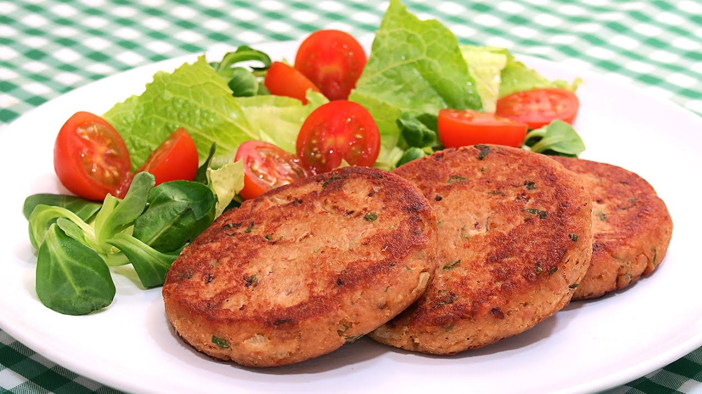

Tortas de Atún

Ingredientes:
- 1 lata de atún en trozos en aceite
- 1 huevo
- Polvo de pan
- Pimienta
- Aceite para cocinar
- Margarina para cocinar
Preparación:
- En un tazón, mezclar el atún, el huevo, la pimienta y polvo de pan hasta lograr consistencia
- Formar tortitas con la mezcla obtenida en el paso anterior
- Derretir una cucharadita de margarina junto con el aceite en un sartén
- Freír las tortas por ambos lados hasta que estén doradas